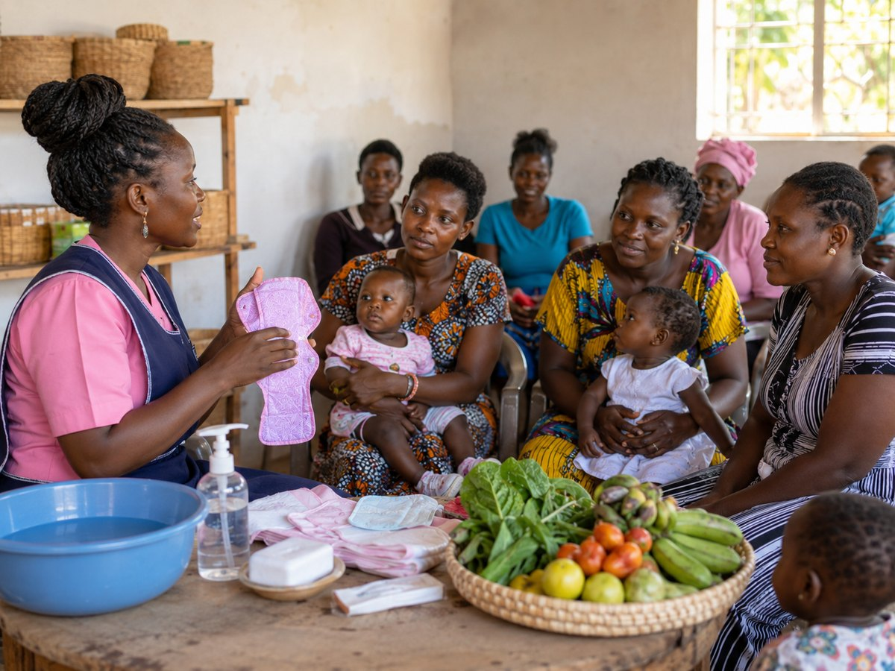
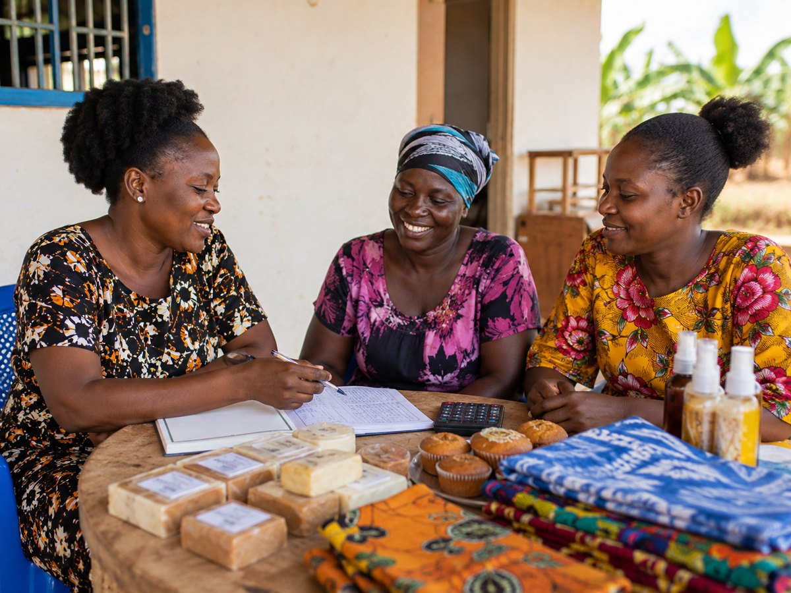
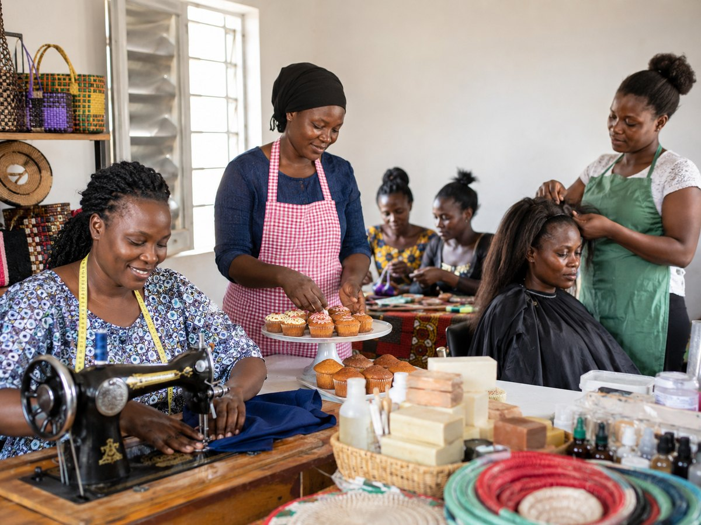
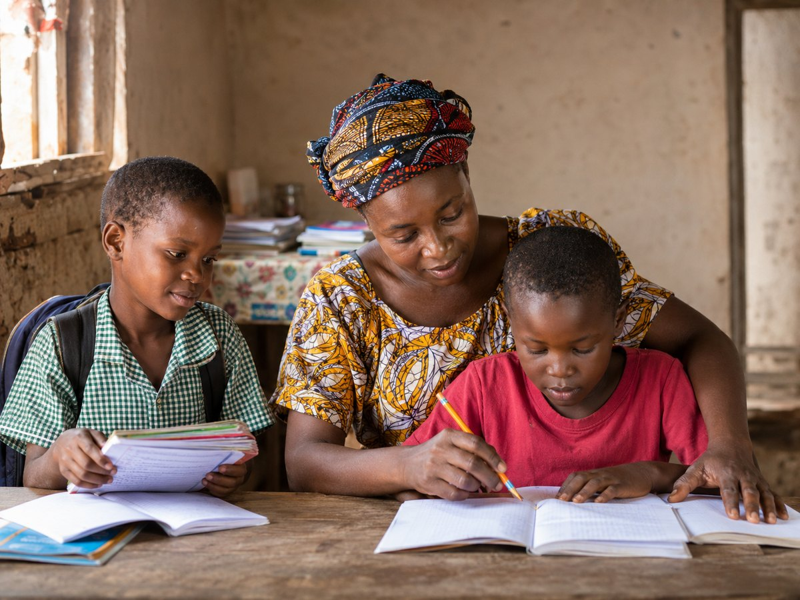
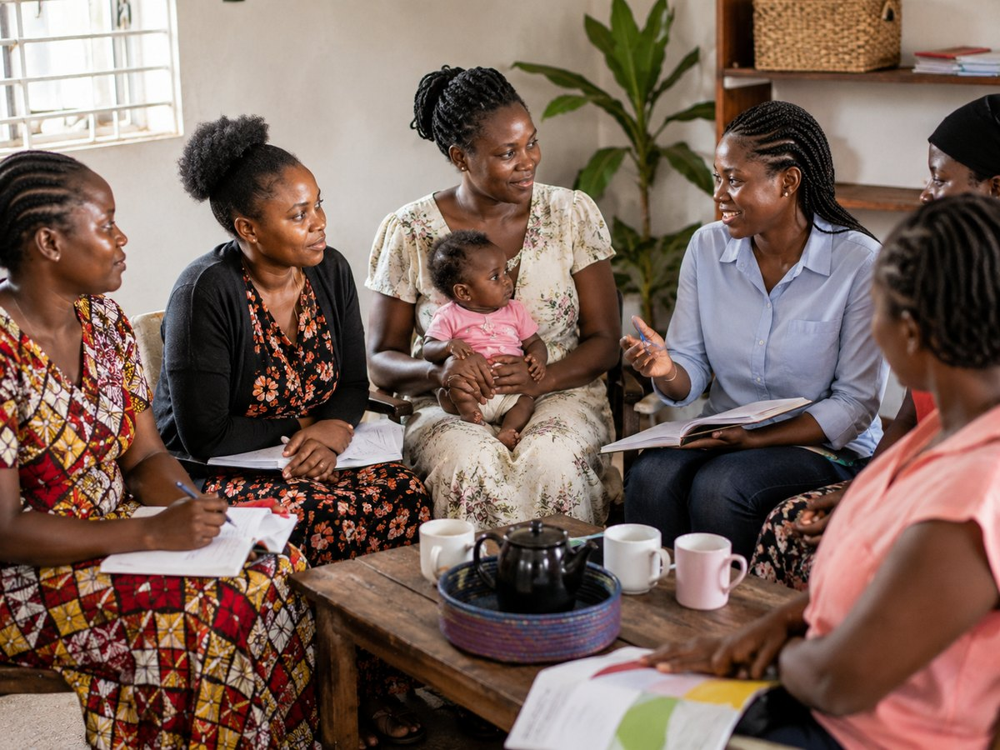
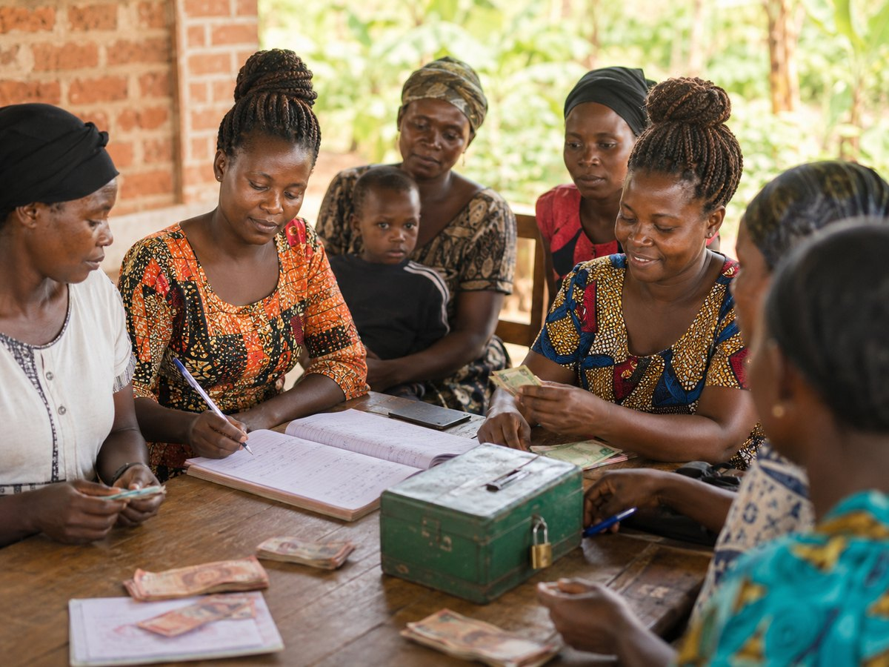

Special Needs Support
Helping mothers care for children with special needs through caregiver guidance, dignity, inclusion, school follow-up, health awareness, referral support, and practical family assistance where resources allow.
- Caregiver guidance
- Learning and school support
- Clinic or referral follow-up
- Community inclusion and dignity

Livelihoods & Enterprise
Business coaching, small enterprise planning, simple record keeping, pricing, customer care, and income-generation support.
- Small retail trade
- Food vending
- Poultry and agriculture
- Product-based micro-businesses

Vocational Skills
Practical training based on local market demand and the interests of participating mothers.
- Tailoring
- Baking and catering
- Hairdressing
- Soap and craft making

Inclusive Education Support
Helping mothers keep children in school, including children with special needs who may require extra learning materials, patience, follow-up, or family advocacy.
- Scholastic materials
- Uniform support
- School attendance follow-up
- Parental education guidance

Counselling & Mentorship
Emotional support, confidence building, peer-support circles, and guidance for mothers facing stress and social isolation.

Savings & Financial Literacy
Promoting savings, budgeting, responsible borrowing, and household financial discipline through a community savings group.
Health, Hygiene, Safeguarding & Inclusion
Health awareness, menstrual hygiene support, child protection, disability inclusion, nutrition, dignity, and referral to appropriate services when needed.